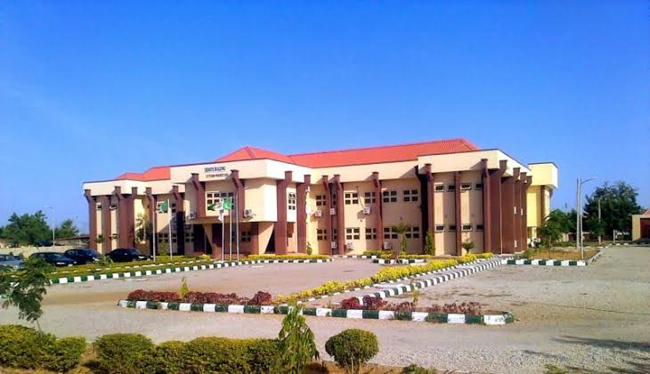

About FUDMA Portal
Welcome to FUDMA Portal, the go-to information hub for students and staff of the Federal University Dutsin-Ma, Katsina State, Nigeria. Our website was created with the aim of providing a platform for students to access important information and connect with their fellow classmates and faculty members.
Our University
Federal University Dutsin-Ma (FUDMA) is a federal government-owned tertiary institution located in Dutsin-Ma, Katsina State, Nigeria. It was established in February 2011 and has since grown to become a leading institution of higher learning in Nigeria, with a reputation for academic excellence and research innovation.
Our Mission and Vision
At FUDMA, our mission is to provide a conducive environment for the development of high-quality human capital through teaching, research, and community service. Our vision is to become a world-class institution of higher learning, producing graduates who are equipped with the knowledge, skills, and values needed to tackle the challenges of the 21st century.
Our Website
FUDMA Portal is designed to provide easy access to important information and resources for students and staff of the university. Some of the features of our website include:
- Course materials: Access lecture notes, handouts, and other course materials for each academic session.
- Academic calendar: View the academic calendar for the current session, including important dates such as registration deadlines, examinations, and holidays.
- Examination results: Check your results for each academic session, including mid-semester and end-of-semester examinations.
- Student forum: Interact with other students and faculty members through our online forum, where you can discuss academic topics and share ideas.
Our Future Plans
.jpeg)
At FUDMA Portal, we are committed to continually improving our website and expanding our range of services. In the near future, we plan to add new features such as online course registration, virtual classrooms, and more interactive discussion forums. We are also exploring partnerships with other universities and research institutions to expand our research capabilities and contribute to the development of new knowledge in various fields.